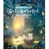

■ 翻訳出版権の仲介および海外テレビ番組配給
タトル・モリ エイジェンシーは、選りすぐりの海外作品をご紹介いたします。
詳しくは右のトピックリストからお選びください。

現在、弊社では社内SEを募集しております。
タトル・モリエイジェンシーは、「翻訳書ときどき洋書」というオウンドメディアの企画・運営を始めました。執筆者、翻訳書、編集者、エージェントによる翻訳書と洋書の作品や文化を紹介するサイトです。ぜひご覧ください（サイトへのリンク）。
二重課税の回避のための日本国とドイツ連邦共和国政府の間の「新租税協定」が署名されました。今後両国での承認手続きを経たうえで発効され、おそらく2017年1月１日分のドイツ権利者への送金分から適用される見通しです。
2014年10月12日に発効した「新租税条約」が2015年1月１日分のスウェーデン権利者への送金分から適用されることになりました。
2013年10月25日に発効した「日ニュージーランド租税条約」が2014年1月１日分のニュージーランド権利者への送金分から適用されることになりました。
2013年7月28日に発効した新「日ポルトガル租税条約」が2014年1月１日分のポルトガル権利者への送金分から適用されることになりました。
東日本大震災からの復興のための施策を実施するための財源確保のため復興財源確保法が２０１１年１１月３０日に成立しました。 これにより２０１３年１月１日から２５年間にわたって従来の所得税に加えて対象となる所得税額の2.1%相当の復興特別所得税額を源泉所得税と併せて国に納付することになりました。
| 所得税率 | - 2012年末
|
2013年1月1日 - |
2038年1月1日 - |
| 使用料の場合 |
所得税 20% |
所得税 20.42% *1 |
所得税 20% |
2011年12月29日に発効した日欄租税条約が2012年1月１日分のオランダの権利者への送金分から適用されることになりました。昨年までに比べていくつかの新しい書類が必要となりますが、 弊社担当者のほうで権利者からなるべく円滑にそれら必要書類を取り寄せるようにいたします。
2011年12月30日に発効した日本・スイス租税条約が2012年1月１日分のスイスの権利者への送金分から適用されることになりました。昨年までに比べていくつかの新しい書類が必要となりますが、 弊社担当者のほうで権利者からなるべく円滑にそれら必要書類を取り寄せるようにいたします。
古い記事 | 新しい記事
| ■児童書部門では、世界で愛されている美しい仕掛け絵本『はらぺこあおむし』（エリック・カール著、偕成社刊）と、多くのシリーズ作品を、日本にご紹介しています。 | |
| ■2020年はバート・スターン監督作品『真夏の夜のジャズ』の日本公開60周年。伝説の「夏フェス」をいまに伝える本作品の４Kリマスター版契約仲介を弊社映像部門で担当させていただきました。 | |
| ■ 『LIFE DESIGN（ライフデザイン）』の著者らが開発したスタンフォード大学の超人気講座発、日本版公式ワークショップを弊社が運営します。近日詳細を公開！ | |
|  | ■2020年は、ムーミン75周年。アニメ絵本『ムーミン谷のなかまたち リトルミイがやってきた』の国際共同出版契約は弊社児童書部門で仲介させていただきました。NHK放映アニメ「ムーミン谷のなかまたち」関連出版第一弾。 |
| ■話題の著者への「寄稿・執筆・ 出演依頼」の仲介も扱っております。ベストセラー『スタンフォードの自分 を変える教室』のケリー・マクゴニガル氏をはじめとして、最新の「知」 を貴社のプロジェクトに。 | |
| ■発売後1ヶ月で10万部（e-book含む）という異例のヒットとなった中国発のSF、『三体』（劉 慈欣著、早川書房刊）。『SFが読みたい！2020年版』のベストSF2019［海外編］では堂々1位にランキング。 | |
 |
■国外ライセンス部門では傑作コミックス作品『キャプテン翼』（高橋陽一著、集英社刊）のアラビア語版ライセンスをハンドリングさせていただきました。 |
| ■国外ライセンス部門では『白夜行 - 英題Journey Under the Midnight Sun（東野圭吾著、集英社刊）の海外ライセンスをハンドリングさせていただいております。2015年秋に英語版が英米にて発行されました。 | |
| ■ 『スタンフォードの自分を変える教室 』（ケリー・マクゴニガル著、大和書房刊）。Amazon、日販、トーハンの2013年度ビジネス書部門の年間ベストセラー第１位に選出された同書は2016年6月現在、82万部越えです。 | |
 |
■宮崎駿監督による『ハウルの動く城』（ダイアナ･ウィン・ジョーンズ原作仲介）は国内で１５００万人という観客動員数を記録し、日本映画史上に残る人気作品となりました。 |
弊社では広い分野の海外作品の出版企画情報、マニュスクリプトや完本サンプル、映像作品の試写サンプル、世界の出版社が発行する最新版カタログなどを東京の事務所に取り揃えております。 権利購入をお考えでしたら、弊社の営業窓口までご連絡ください。